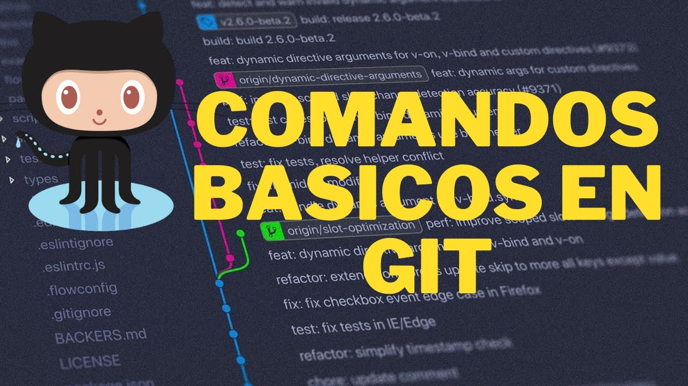
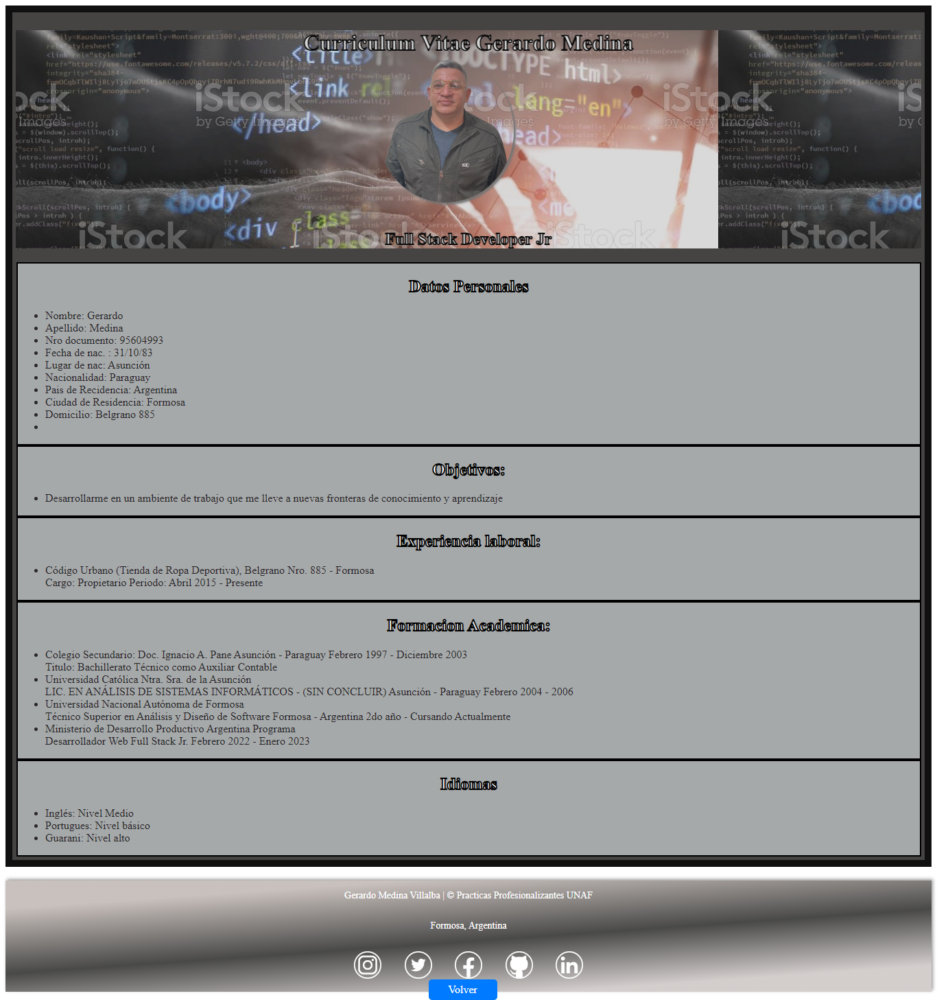
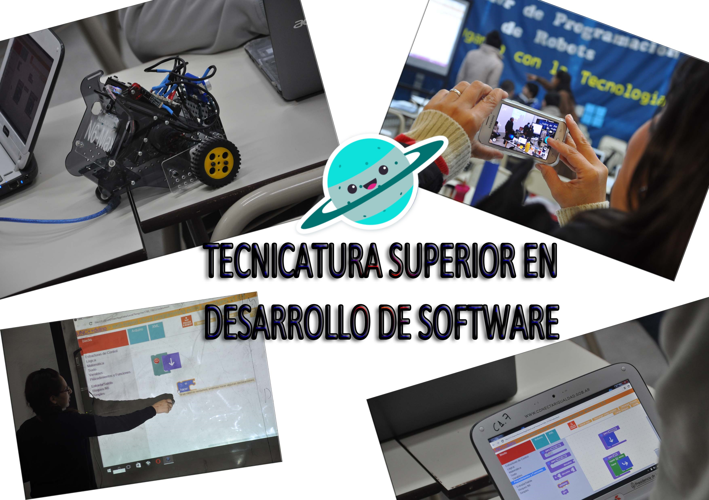

Práctica Profesional II SOFTWARE- UNaF
Gerardo Medina Villalba
POWER POINT DE GIT
El CURRICULUM
UNIDAD I: El Rol del Técnico Superior en Desarrollo de Software.
POWER POINT DE GIT

El CURRICULUM

Téc. Sup. en Desarrollo de Software
